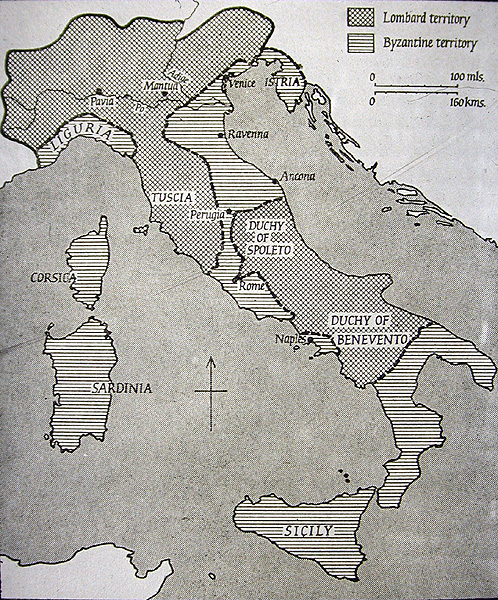
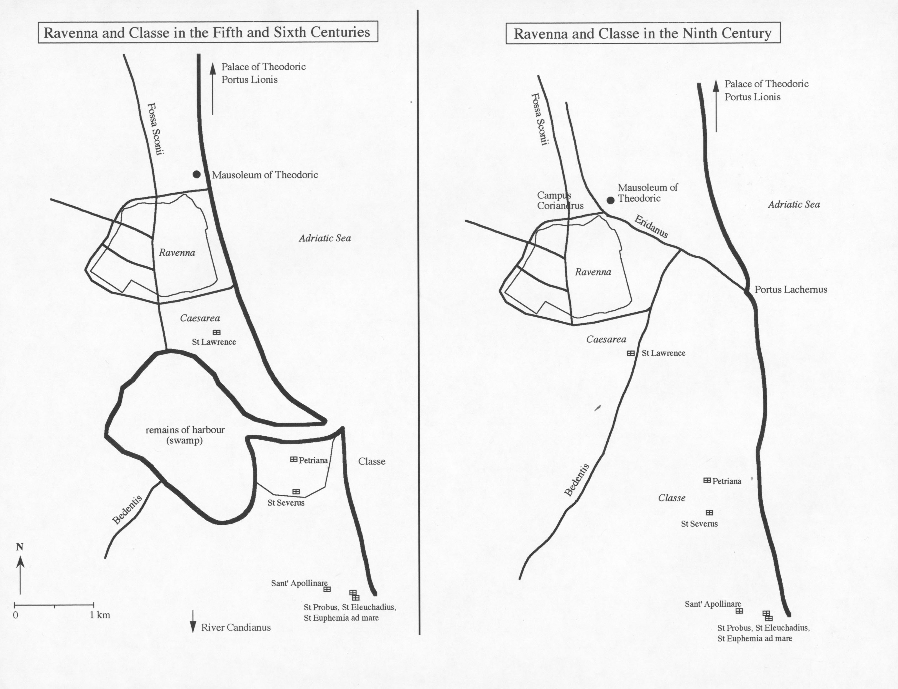

Ravenna is located on the north-east coast of Italy.

In the Roman period it was on the coast, with an important harbor to the south (Classe), but by the ninth century the coastline and harbor had silted up.
